This dataset was sourced from the data repositories on the CDC website. This data evaluates the weekly hospitalization metrics for viral respiratory infections by jurisdiction in the United States from the mandatory reporting periods of August 1, 2020 to April 30, 2024, and then some voluntary reporting from May 1, 2024 - October 31, 2024. The data focuses on viral respiratory hospitalizations, primarily COVID-19 and influenza, and is derived from the National Healthcare Safety Network (NHSN).
The data is reported by week and contains information on the number of hospitals reporting adult COVID-19 adminssions, pediatric COVID-19 admissions, and influenza admissions. It then also provides a number of other variables related to hospital admissions and occupancies (including inpatient and ICU bed occupancies), and this is reported by geographic aggregation (State) and icludes the number of hospitals reporting in that time frame (including the hospital and patient reporting days).
Centers for Disease Control and Prevention, Division of Healthcare Quality Promotion, National Healthcare Safety Network (NHSN), Weekly United States Viral Respiratory Hospitalization, Bed Occupancy, and Bed Capacity Metrics by Jurisdiction, During the Mandatory Hospital Reporting Period from August 1, 2020 to April 30, 2024, and for Data Reported Voluntarily Beginning May 1, 2024 (version date: November 1, 2024).
Evaluating the data
First let’s load the required packages for our data analysis
library(tidyverse)
Warning: package 'tidyverse' was built under R version 4.4.2
Warning: package 'readr' was built under R version 4.4.2
── Attaching core tidyverse packages ──────────────────────── tidyverse 2.0.0 ──
✔ dplyr 1.1.4 ✔ readr 2.1.5
✔ forcats 1.0.0 ✔ stringr 1.5.1
✔ ggplot2 3.5.1 ✔ tibble 3.2.1
✔ lubridate 1.9.3 ✔ tidyr 1.3.1
✔ purrr 1.0.2
── Conflicts ────────────────────────────────────────── tidyverse_conflicts() ──
✖ dplyr::filter() masks stats::filter()
✖ dplyr::lag() masks stats::lag()
ℹ Use the conflicted package (<http://conflicted.r-lib.org/>) to force all conflicts to become errors
Let us load and get a summary of the CDC dataset. Note that the name of the file was changed at download to have a more user friendly name. Change the name at download to the same name used below or change the name of the file when loading the data to the name We will name this full dataset as cdc_datsset in R and work with that variable name.
cdc_dataset <-read_csv(here::here("cdcdata-exercise/cdc_data_weekly_respiratory_hospitalizations_2020-2024.csv") ) # MJ: updated to use "here" package, useful for collaboration work
Rows: 12597 Columns: 82
── Column specification ────────────────────────────────────────────────────────
Delimiter: ","
chr (1): Geographic aggregation
dbl (80): Hospital Reporting Days, Percent Hospital Reporting Days, Number ...
date (1): Week Ending Date
ℹ Use `spec()` to retrieve the full column specification for this data.
ℹ Specify the column types or set `show_col_types = FALSE` to quiet this message.
#Viewing the dataset and getting a summarysummary(cdc_dataset)
Week Ending Date Geographic aggregation Hospital Reporting Days
Min. :2020-08-08 Length:12597 Min. : 0.0
1st Qu.:2021-08-28 Class :character 1st Qu.: 204.2
Median :2022-09-17 Mode :character Median : 474.0
Mean :2022-09-17 Mean : 1101.5
3rd Qu.:2023-10-07 3rd Qu.: 797.0
Max. :2024-10-26 Max. :33925.0
NA's :171
Percent Hospital Reporting Days
Min. :0.0000
1st Qu.:0.9500
Median :0.9800
Mean :0.8996
3rd Qu.:1.0000
Max. :1.0000
NA's :171
Number Hospitals Reporting Adult COVID-19 Admissions
Min. : 0.0
1st Qu.: 28.0
Median : 64.0
Mean : 157.4
3rd Qu.: 114.0
Max. :4872.0
Number Hospitals Reporting Pediatric COVID-19 Admissions
Min. : 0.0
1st Qu.: 27.0
Median : 63.0
Mean : 156.4
3rd Qu.: 114.0
Max. :4872.0
Number Hospitals Reporting Influenza Admissions
Min. : 0.0
1st Qu.: 24.0
Median : 58.0
Mean : 144.9
3rd Qu.: 112.0
Max. :4872.0
Number Hospitals Reporting Prevalent Influenza Hospitalizations
Min. : 0.0
1st Qu.: 24.0
Median : 58.0
Mean : 144.9
3rd Qu.: 112.0
Max. :4872.0
Number Hospitals Reporting Hospitalized Influenza ICU Patients
Min. : 0.0
1st Qu.: 24.0
Median : 58.0
Mean : 144.9
3rd Qu.: 112.0
Max. :4872.0
Number Hospitals Reporting Inpatient Beds Number Hospitals Reporting ICU Beds
Min. : 0.0 Min. : 0.0
1st Qu.: 28.0 1st Qu.: 28.0
Median : 63.0 Median : 63.0
Mean : 156.7 Mean : 157.1
3rd Qu.: 114.0 3rd Qu.: 114.0
Max. :4868.0 Max. :4872.0
Number Hospitals Reporting Inpatient Beds Occupied
Min. : 0.0
1st Qu.: 28.0
Median : 63.0
Mean : 156.7
3rd Qu.: 114.0
Max. :4868.0
Number Hospitals Reporting ICU Beds Occupied
Min. : 0.0
1st Qu.: 27.0
Median : 63.0
Mean : 155.8
3rd Qu.: 114.0
Max. :4864.0
Number Hospitals Reporting Percent Inpatient Bed Occupancy
Min. : 0.0
1st Qu.: 28.0
Median : 63.0
Mean : 156.7
3rd Qu.: 114.0
Max. :4868.0
Number Hospitals Reporting Percent ICU Bed Occupancy
Min. : 0.0
1st Qu.: 27.0
Median : 63.0
Mean : 155.8
3rd Qu.: 114.0
Max. :4864.0
Number Hospitals Reporting Percent COVID-19 Inpatient Bed Occupancy
Min. : 0.0
1st Qu.: 27.0
Median : 63.0
Mean : 156.3
3rd Qu.: 114.0
Max. :4868.0
Number Hospitals Reporting Percent Influenza Inpatient Bed Occupancy
Min. : 0.0
1st Qu.: 24.0
Median : 57.0
Mean : 144.4
3rd Qu.: 112.0
Max. :4868.0
Number Hospitals Reporting Percent COVID-19 ICU Bed Occupancy
Min. : 0.0
1st Qu.: 27.0
Median : 63.0
Mean : 156.3
3rd Qu.: 114.0
Max. :4872.0
Number Hospitals Reporting Percent Influenza ICU Bed Occupancy
Min. : 0.0
1st Qu.: 24.0
Median : 57.0
Mean : 144.7
3rd Qu.: 112.0
Max. :4872.0
Number Hospitals Reporting Total COVID-19 Admissions
Min. : 0.0
1st Qu.: 28.0
Median : 64.0
Mean : 157.4
3rd Qu.: 114.0
Max. :4872.0
Number Hospitals Reporting Prevalent COVID-19 Hospitalizations
Min. : 0
1st Qu.: 27
Median : 63
Mean : 157
3rd Qu.: 114
Max. :4872
Number Hospitals Reporting Hospitalized COVID-19 ICU Patients
Min. : 0.0
1st Qu.: 27.0
Median : 63.0
Mean : 156.4
3rd Qu.: 114.0
Max. :4872.0
Weekly Average Adult COVID-19 Admissions
Min. : 0.00
1st Qu.: 8.71
Median : 28.86
Mean : 154.91
3rd Qu.: 86.82
Max. :20271.57
NA's :263
Weekly Total Adult COVID-19 Admissions
Min. : 0.0
1st Qu.: 61.0
Median : 202.0
Mean : 1084.3
3rd Qu.: 607.8
Max. :141901.0
NA's :263
Weekly Average Pediatric COVID-19 Admissions
Min. : 0.000
1st Qu.: 0.290
Median : 1.140
Mean : 5.356
3rd Qu.: 3.140
Max. :907.140
NA's :272
Weekly Total Pediatric COVID-19 Admissions Weekly Average COVID-19 Admissions
Min. : 0.00 Min. : 0.00
1st Qu.: 2.00 1st Qu.: 9.43
Median : 8.00 Median : 30.14
Mean : 37.49 Mean : 160.27
3rd Qu.: 22.00 3rd Qu.: 89.57
Max. :6350.00 Max. :21178.71
NA's :272 NA's :263
Weekly Total COVID-19 Admissions Weekly Average Influenza Admissions
Min. : 0 Min. : 0.00
1st Qu.: 66 1st Qu.: 0.14
Median : 211 Median : 1.14
Mean : 1122 Mean : 13.44
3rd Qu.: 627 3rd Qu.: 4.71
Max. :148251 Max. :3696.00
NA's :263 NA's :778
Weekly Total Influenza Admissions
Min. : 0.00
1st Qu.: 1.00
Median : 8.00
Mean : 94.09
3rd Qu.: 33.00
Max. :25872.00
NA's :778
Weekly Average Prevalent COVID-19 Hospitalizations
Min. : 0.00
1st Qu.: 55.86
Median : 193.64
Mean : 1121.83
3rd Qu.: 600.18
Max. :143988.14
NA's :263
Weekly Average Prevalent Influenza Hospitalizations
Min. : 0.00
1st Qu.: 1.00
Median : 6.29
Mean : 70.75
3rd Qu.: 26.86
Max. :15911.71
NA's :786
Weekly Average Hospitalized COVID-19 ICU Patients
Min. : 0.00
1st Qu.: 7.43
Median : 32.14
Mean : 229.82
3rd Qu.: 117.00
Max. :26442.14
NA's :274
Weekly Average Hospitalized Influenza ICU Patients
Min. : 0.00
1st Qu.: 0.00
Median : 0.86
Mean : 11.23
3rd Qu.: 3.71
Max. :2333.71
NA's :778
Weekly Average Inpatient Beds Weekly Average ICU Beds
Min. : 7 Min. : 0.0
1st Qu.: 2590 1st Qu.: 332.3
Median : 7648 Median : 1052.9
Mean : 22430 Mean : 3363.7
3rd Qu.: 15473 3rd Qu.: 2425.8
Max. :710607 Max. :113106.0
NA's :263 NA's :263
Weekly Average Inpatient Beds Occupied Weekly Average ICU Beds Occupied
Min. : 0.3 Min. : 0.0
1st Qu.: 1891.2 1st Qu.: 221.7
Median : 5241.7 Median : 747.6
Mean : 16707.7 Mean : 2370.4
3rd Qu.: 11438.7 3rd Qu.: 1570.2
Max. :538750.1 Max. :82660.3
NA's :263 NA's :278
Weekly Average Percent Inpatient Bed Occupancy
Min. :0.0400
1st Qu.:0.6700
Median :0.7300
Mean :0.7187
3rd Qu.:0.7900
Max. :1.0900
NA's :263
Weekly Average Percent ICU Bed Occupancy
Min. :0.0000
1st Qu.:0.6300
Median :0.7000
Mean :0.6823
3rd Qu.:0.7600
Max. :1.0000
NA's :309
Weekly Average Percent COVID-19 Inpatient Bed Occupancy
Min. :0.00000
1st Qu.:0.01000
Median :0.03000
Mean :0.04221
3rd Qu.:0.05000
Max. :0.35000
NA's :263
Weekly Average Percent Influenza Inpatient Bed Occupancy
Min. :0.0000
1st Qu.:0.0000
Median :0.0000
Mean :0.0023
3rd Qu.:0.0000
Max. :0.0700
NA's :781
Weekly Average Percent COVID-19 ICU Bed Occupancy
Min. :0.00000
1st Qu.:0.01000
Median :0.03000
Mean :0.05781
3rd Qu.:0.07000
Max. :0.68000
NA's :305
Weekly Average Percent Influenza ICU Bed Occupancy
Min. :0.0000
1st Qu.:0.0000
Median :0.0000
Mean :0.0026
3rd Qu.:0.0000
Max. :0.0900
NA's :839
Percent Adult COVID-19 Admissions Percent Pediatric COVID-19 Admissions
Min. :0.0000 Min. :0.0000
1st Qu.:0.9500 1st Qu.:0.0200
Median :0.9700 Median :0.0300
Mean :0.9537 Mean :0.0454
3rd Qu.:0.9800 3rd Qu.:0.0500
Max. :1.0000 Max. :1.0000
NA's :574 NA's :574
Percent Hospitals Reporting Adult COVID-19 Admissions
Min. :0.0000
1st Qu.:0.9600
Median :0.9800
Mean :0.8984
3rd Qu.:1.0000
Max. :1.0000
Percent Hospitals Reporting Pediatric COVID-19 Admissions
Min. :0.0000
1st Qu.:0.9600
Median :0.9800
Mean :0.8927
3rd Qu.:1.0000
Max. :1.0000
Percent Hospitals Reporting Influenza Admissions
Min. :0.0000
1st Qu.:0.9200
Median :0.9700
Mean :0.8312
3rd Qu.:1.0000
Max. :1.0000
Percent Hospitals Reporting Prevalent Influenza Hospitalizations
Min. :0.0000
1st Qu.:0.9200
Median :0.9700
Mean :0.8313
3rd Qu.:1.0000
Max. :1.0000
Percent Hospitals Reporting Hospitalized Influenza ICU Patients
Min. :0.0000
1st Qu.:0.9200
Median :0.9700
Mean :0.8312
3rd Qu.:1.0000
Max. :1.0000
Percent Hospitals Reporting Inpatient Beds
Min. :0.0000
1st Qu.:0.9500
Median :0.9800
Mean :0.8945
3rd Qu.:1.0000
Max. :1.0000
Percent Hospitals Reporting ICU Beds
Min. :0.0000
1st Qu.:0.9600
Median :0.9800
Mean :0.8969
3rd Qu.:1.0000
Max. :1.0000
Percent Hospitals Reporting Inpatient Beds Occupied
Min. :0.0000
1st Qu.:0.9500
Median :0.9800
Mean :0.8945
3rd Qu.:1.0000
Max. :1.0000
Percent Hospitals Reporting ICU Beds Occupied
Min. :0.0000
1st Qu.:0.9500
Median :0.9800
Mean :0.8881
3rd Qu.:1.0000
Max. :1.0000
Percent Hospitals Reporting Percent Inpatient Bed Occupancy
Min. :0.0000
1st Qu.:0.9500
Median :0.9800
Mean :0.8945
3rd Qu.:1.0000
Max. :1.0000
Percent Hospitals Reporting Percent ICU Bed Occupancy
Min. :0.0000
1st Qu.:0.9500
Median :0.9800
Mean :0.8881
3rd Qu.:1.0000
Max. :1.0000
Percent Hospitals Reporting Percent COVID-19 Inpatient Bed Occupancy
Min. :0.0000
1st Qu.:0.9500
Median :0.9800
Mean :0.8926
3rd Qu.:1.0000
Max. :1.0000
Percent Hospitals Reporting Percent Influenza Inpatient Bed Occupancy
Min. :0.0000
1st Qu.:0.9200
Median :0.9700
Mean :0.8293
3rd Qu.:1.0000
Max. :1.0000
Percent Hospitals Reporting Percent COVID-19 ICU Bed Occupancy
Min. :0.0000
1st Qu.:0.9600
Median :0.9800
Mean :0.8916
3rd Qu.:1.0000
Max. :1.0000
Percent Hospitals Reporting Percent Influenza ICU Bed Occupancy
Min. :0.0000
1st Qu.:0.9200
Median :0.9700
Mean :0.8305
3rd Qu.:1.0000
Max. :1.0000
Percent Hospitals Reporting Total COVID-19 Admissions
Min. :0.0000
1st Qu.:0.9600
Median :0.9800
Mean :0.8985
3rd Qu.:1.0000
Max. :1.0000
Percent Hospitals Reporting Prevalent COVID-19 Hospitalizations
Min. :0.0000
1st Qu.:0.9600
Median :0.9800
Mean :0.8963
3rd Qu.:1.0000
Max. :1.0000
Percent Hospitals Reporting Hospitalized COVID-19 ICU Patients
Min. :0.0000
1st Qu.:0.9600
Median :0.9800
Mean :0.8925
3rd Qu.:1.0000
Max. :1.0000
Absolute Change in the Percent Hospitals Reporting Adult COVID-19 Admissions from Prior Week
Min. :-100.0000
1st Qu.: 0.0000
Median : 0.0000
Mean : -0.2037
3rd Qu.: 0.0000
Max. : 100.0000
NA's :57
Absolute Change in the Percent Hospitals Reporting Pediatric COVID-19 Admissions from Prior Week
Min. :-100.0000
1st Qu.: 0.0000
Median : 0.0000
Mean : -0.1778
3rd Qu.: 0.0000
Max. : 100.0000
NA's :57
Absolute Change in the Percent Hospitals Reporting Influenza Admissions from Prior Week
Min. :-100.0000
1st Qu.: 0.0000
Median : 0.0000
Mean : 0.1491
3rd Qu.: 0.0000
Max. : 100.0000
NA's :57
Absolute Change in the Percent Hospitals Reporting Prevalent Influenza Hospitalizations from Prior Week
Min. :-100.0000
1st Qu.: 0.0000
Median : 0.0000
Mean : 0.1487
3rd Qu.: 0.0000
Max. : 100.0000
NA's :57
Absolute Change in the Percent Hospitals Reporting Hospitalized Influenza ICU Patients from Prior Week
Min. :-100.0000
1st Qu.: 0.0000
Median : 0.0000
Mean : 0.1485
3rd Qu.: 0.0000
Max. : 100.0000
NA's :57
Absolute Change in the Percent Hospitals Reporting Inpatient Beds from Prior Week
Min. :-100.0000
1st Qu.: 0.0000
Median : 0.0000
Mean : -0.2326
3rd Qu.: 0.0000
Max. : 100.0000
NA's :57
Absolute Change in the Percent Hospitals Reporting ICU Beds from Prior Week
Min. :-100.0000
1st Qu.: 0.0000
Median : 0.0000
Mean : -0.2561
3rd Qu.: 0.0000
Max. : 100.0000
NA's :57
Absolute Change in the Percent Hospitals Reporting Inpatient Beds Occupied from Prior Week
Min. :-100.0000
1st Qu.: 0.0000
Median : 0.0000
Mean : -0.2326
3rd Qu.: 0.0000
Max. : 100.0000
NA's :57
Absolute Change in the Percent Hospitals Reporting ICU Beds Occupied from Prior Week
Min. :-100.0000
1st Qu.: 0.0000
Median : 0.0000
Mean : -0.1627
3rd Qu.: 0.0000
Max. : 100.0000
NA's :57
Absolute Change in the Percent Hospitals Reporting Percent Inpatient Bed Occupancy from Prior Week
Min. :-100.0000
1st Qu.: 0.0000
Median : 0.0000
Mean : -0.2326
3rd Qu.: 0.0000
Max. : 100.0000
NA's :57
Absolute Change in the Percent Hospitals Reporting Percent ICU Bed Occupancy from Prior Week
Min. :-100.0000
1st Qu.: 0.0000
Median : 0.0000
Mean : -0.1627
3rd Qu.: 0.0000
Max. : 100.0000
NA's :57
Absolute Change in the Percent Hospitals Reporting Percent COVID-19 Inpatient Bed Occupancy from Prior Week
Min. :-100.0000
1st Qu.: 0.0000
Median : 0.0000
Mean : -0.1973
3rd Qu.: 0.0000
Max. : 100.0000
NA's :57
Absolute Change in the Percent Hospitals Reporting Percent Influenza Inpatient Bed Occupancy from Prior Week
Min. :-100.0000
1st Qu.: 0.0000
Median : 0.0000
Mean : 0.1487
3rd Qu.: 0.0000
Max. : 100.0000
NA's :57
Absolute Change in the Percent Hospitals Reporting Percent COVID-19 ICU Bed Occupancy from Prior Week
Min. :-100.000
1st Qu.: 0.000
Median : 0.000
Mean : -0.195
3rd Qu.: 0.000
Max. : 100.000
NA's :57
Absolute Change in the Percent Hospitals Reporting Percent Influenza ICU Bed Occupancy from Prior Week
Min. :-100.000
1st Qu.: 0.000
Median : 0.000
Mean : 0.142
3rd Qu.: 0.000
Max. : 100.000
NA's :57
Absolute Change in the Percent Hospitals Reporting Total COVID-19 Admissions from Prior Week
Min. :-100.0000
1st Qu.: 0.0000
Median : 0.0000
Mean : -0.2091
3rd Qu.: 0.0000
Max. : 100.0000
NA's :57
Absolute Change in the Percent Hospitals Reporting Prevalent COVID-19 Hospitalizations from Prior Week
Min. :-100.0000
1st Qu.: 0.0000
Median : 0.0000
Mean : -0.2261
3rd Qu.: 0.0000
Max. : 100.0000
NA's :57
Absolute Change in the Percent Hospitals Reporting Hospitalized COVID-19 ICU Patients from Prior Week
Min. :-100.000
1st Qu.: 0.000
Median : 0.000
Mean : -0.201
3rd Qu.: 0.000
Max. : 100.000
NA's :57
view(cdc_dataset)print(cdc_dataset)
# A tibble: 12,597 × 82
`Week Ending Date` `Geographic aggregation` `Hospital Reporting Days`
<date> <chr> <dbl>
1 2020-08-08 AK 98
2 2020-08-15 AK 98
3 2020-08-22 AK 98
4 2020-08-29 AK 97
5 2020-09-05 AK 97
6 2020-09-12 AK 98
7 2020-09-19 AK 98
8 2020-09-26 AK 96
9 2020-10-03 AK 97
10 2020-10-10 AK 98
# ℹ 12,587 more rows
# ℹ 79 more variables: `Percent Hospital Reporting Days` <dbl>,
# `Number Hospitals Reporting Adult COVID-19 Admissions` <dbl>,
# `Number Hospitals Reporting Pediatric COVID-19 Admissions` <dbl>,
# `Number Hospitals Reporting Influenza Admissions` <dbl>,
# `Number Hospitals Reporting Prevalent Influenza Hospitalizations` <dbl>,
# `Number Hospitals Reporting Hospitalized Influenza ICU Patients` <dbl>, …
The summary of the dataset is valuable but it helps to actually view and scroll through the data for a better overview and feel of the data.
We can see that this is a very large dataset. There are 12597 observations in this dataset and 82 columns. We have to do a lot of scrolling to see much, including our summary, which is not very helpful. This is very big for us to evaluate and so we might want to cut it down a bit before we spend time filtering through and cleaning all of the data that is not of interest to us.
For this evaluation we want to have an idea of how COVID-19 and infuenza affected the population by evaluating the hospitilization rates. We are interested in knowing how this affected the healthcare system so we will include the information related to how many hospitals reported data and the occupancy of these hospitals. From viewing the data there seems to be overlap and repetition of some of the data, as well as categories and definitions that are not necessary for us, so we will reduce our columns to those of greatest interest to us. We will focus on adult data as the reporting of pediatric data seems to be limited to COVID-19 and thus will limit any comparisons to influenza.
We are also not going to split up ICU vs general admissions for our evaluations, but this is something that could be broken down.
We will also cut down our observations by focusing on one State and by defining our time frame.
This part could be done in either order and the State and time frame could be adapted.
Cutting down our dataset: Since we know that the mandatory reporting period will have the best information reported, we will focus on this time frame August 1, 2020 - April 30, 2024. We will also start by focusing on the state of Georgia (region=GA). We will use the filter function to get the rows with these variables.
#Using the filter function to select for our rows of interest. We will assign these to two new variables.#Filter by State = selecting GAcdc_data_georgia <- cdc_dataset |>filter(`Geographic aggregation`=="GA")#Filter further by date = August 1, 2020 - April 30, 2024cdc_georgia_mandatory_data <- cdc_data_georgia |>filter(`Week Ending Date`>="2020-08-01"&`Week Ending Date`<="2024-04-30")
We can see that we have filtered our observations down to 195 observations. We could do the same thing for multiple states (or have included multiple states) and compared the data between states.
Now we will focus on selecting the columns that we are most interested in: We will use the select function. Columns of interest to be kept: - Week Ending Date - Geographic aggregation - Number Hospitals Reporting Adult COVID-19 Admissions - Number Hospitals Reporting Influenza Admissions - Weekly Total Adult COVID-19 Admissions - Weekly Total Influenza Admissions - Weekly Average Hospitalized COVID-19 ICU Patients - Weekly Average Hospitalized Influenza ICU Patients - Weekly Average Inpatient Beds - Weekly Average ICU Beds - Weekly Average Inpatient Beds Occupied - Weekly Average ICU Beds Occupied
Defining our new dataset with columns of interest:
#Using the select function to define our columns of interest for the GA dataset that we refinedcdc_ga_mandatory_refined <- cdc_georgia_mandatory_data |> dplyr::select(`Week Ending Date`,`Geographic aggregation`, `Number Hospitals Reporting Adult COVID-19 Admissions`,`Number Hospitals Reporting Influenza Admissions`,`Weekly Total Adult COVID-19 Admissions`,`Weekly Total Influenza Admissions`,`Weekly Average Hospitalized COVID-19 ICU Patients`,`Weekly Average Hospitalized Influenza ICU Patients`,`Weekly Average Inpatient Beds`,`Weekly Average ICU Beds`,`Weekly Average Inpatient Beds Occupied`,`Weekly Average ICU Beds Occupied`)#View the new datset and a summarysummary(cdc_ga_mandatory_refined)
Week Ending Date Geographic aggregation
Min. :2020-08-08 Length:195
1st Qu.:2021-07-13 Class :character
Median :2022-06-18 Mode :character
Mean :2022-06-18
3rd Qu.:2023-05-23
Max. :2024-04-27
Number Hospitals Reporting Adult COVID-19 Admissions
Min. : 87.0
1st Qu.:137.0
Median :138.0
Mean :137.5
3rd Qu.:139.0
Max. :140.0
Number Hospitals Reporting Influenza Admissions
Min. : 0.0
1st Qu.:134.0
Median :137.0
Mean :127.2
3rd Qu.:139.0
Max. :139.0
Weekly Total Adult COVID-19 Admissions Weekly Total Influenza Admissions
Min. : 122.0 Min. : 0.00
1st Qu.: 410.5 1st Qu.: 17.00
Median : 816.0 Median : 30.00
Mean :1259.5 Mean : 73.04
3rd Qu.:1446.5 3rd Qu.: 54.75
Max. :5459.0 Max. :1123.00
NA's :5
Weekly Average Hospitalized COVID-19 ICU Patients
Min. : 28.57
1st Qu.: 69.64
Median : 137.29
Mean : 283.58
3rd Qu.: 376.29
Max. :1319.86
Weekly Average Hospitalized Influenza ICU Patients
Min. : 0.000
1st Qu.: 2.895
Median : 31.570
Mean : 45.580
3rd Qu.: 71.395
Max. :255.000
NA's :5
Weekly Average Inpatient Beds Weekly Average ICU Beds
Min. :12754 Min. :2403
1st Qu.:17263 1st Qu.:3007
Median :17994 Median :3043
Mean :18361 Mean :3069
3rd Qu.:20123 3rd Qu.:3153
Max. :20852 Max. :3422
Weekly Average Inpatient Beds Occupied Weekly Average ICU Beds Occupied
Min. :10065 Min. :1210
1st Qu.:13769 1st Qu.:2315
Median :14365 Median :2395
Mean :14415 Mean :2377
3rd Qu.:15170 3rd Qu.:2484
Max. :16660 Max. :2828
# A tibble: 195 × 12
`Week Ending Date` `Geographic aggregation` Number Hospitals Reporting Adul…¹
<date> <chr> <dbl>
1 2020-08-08 GA 87
2 2020-08-15 GA 130
3 2020-08-22 GA 130
4 2020-08-29 GA 131
5 2020-09-05 GA 133
6 2020-09-12 GA 134
7 2020-09-19 GA 129
8 2020-09-26 GA 131
9 2020-10-03 GA 139
10 2020-10-10 GA 139
# ℹ 185 more rows
# ℹ abbreviated name: ¹`Number Hospitals Reporting Adult COVID-19 Admissions`
# ℹ 9 more variables: `Number Hospitals Reporting Influenza Admissions` <dbl>,
# `Weekly Total Adult COVID-19 Admissions` <dbl>,
# `Weekly Total Influenza Admissions` <dbl>,
# `Weekly Average Hospitalized COVID-19 ICU Patients` <dbl>,
# `Weekly Average Hospitalized Influenza ICU Patients` <dbl>, …
We have reduced our datset to a much more manageable set of information that we can refine and evalaute. If we feel that we should incude an additional column (left something valuable out) we can go back and add it now. Our sumamry shows us that we have a few NA values in our datset.
We will look for these using the is.na function. We will create a specific variable from these NA values to make it easier to visualise without searching. In reality, with the summary and reduced size of the dataset we can scroll through and find these if we want. However, printing these specifically allows us to isolate them quickly.
# A tibble: 5 × 12
`Week Ending Date` `Geographic aggregation` Number Hospitals Reporting Adult…¹
<date> <chr> <dbl>
1 2020-08-08 GA 87
2 2020-08-15 GA 130
3 2020-08-22 GA 130
4 2020-08-29 GA 131
5 2020-10-10 GA 139
# ℹ abbreviated name: ¹`Number Hospitals Reporting Adult COVID-19 Admissions`
# ℹ 9 more variables: `Number Hospitals Reporting Influenza Admissions` <dbl>,
# `Weekly Total Adult COVID-19 Admissions` <dbl>,
# `Weekly Total Influenza Admissions` <dbl>,
# `Weekly Average Hospitalized COVID-19 ICU Patients` <dbl>,
# `Weekly Average Hospitalized Influenza ICU Patients` <dbl>,
# `Weekly Average Inpatient Beds` <dbl>, `Weekly Average ICU Beds` <dbl>, …
We can see that these NA values are in the first four weeks of observations, and one week in October 2020, and that they are all in the influenza observations. We might be led to believe that perhaps the recording/reporting (or testing) of influenza tests was halted in the peak of the COVID-19 pandemic when resources were limited, or that the order to report influenza cases for this use only cae through later. This is something that we might be able to find on the CDC website if desired. We will not delete these observations because we would lose valuable information related to the COVID-19 pandemic from these weeks. We could potentially use synthetic data for these missing variables or we could work on date ranges that do not include these weeks (2020-08-08 - 2020-08-29 and 2020-10-10) if we want to compare COVID-19 to Influenza.
We will make a few plots of different variables. We will start by analyzing the COVID-19 data.
#We are looking at the distribution of the total adult COVID-19 cases covid_adult_admissions_plot<-ggplot(cdc_ga_mandatory_refined, aes(x=`Weekly Total Adult COVID-19 Admissions`)) +geom_histogram(bins=10,fill="green", color ="black") +labs(title ="Distribution of the weekly total adult COVID-19 Hospital Admissions", x ="Weekly Total Adult COVID-19 Admissions", y ="Week counts")print(covid_adult_admissions_plot)
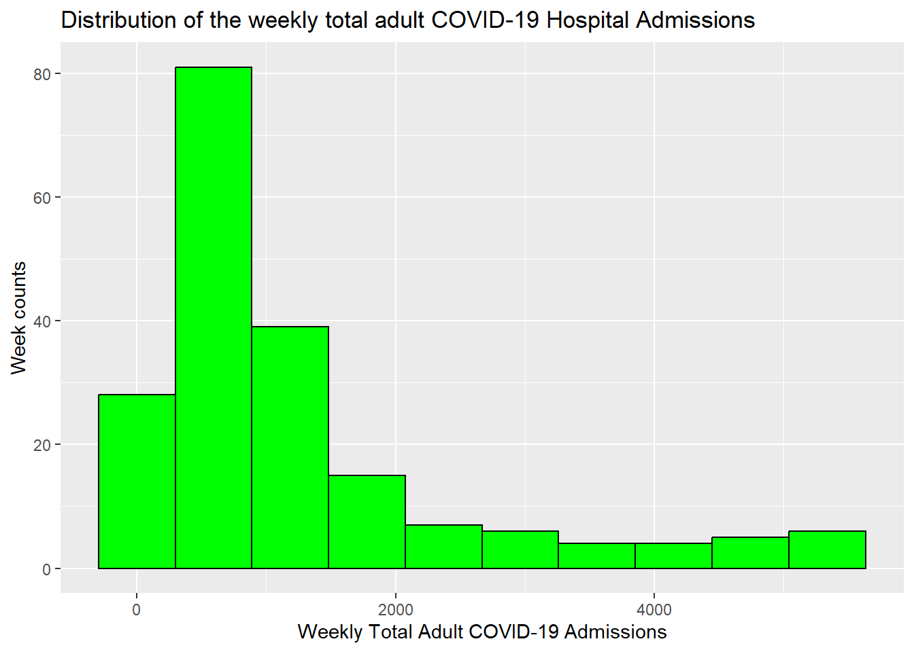
We will get a summary of this data (Distribution of the weekly total adult COVID-19 Hospital Admissions) and calculate the standard deviation
summary(cdc_ga_mandatory_refined$`Weekly Total Adult COVID-19 Admissions`)
Min. 1st Qu. Median Mean 3rd Qu. Max.
122.0 410.5 816.0 1259.5 1446.5 5459.0
#We will calculate the standard deviationsd(cdc_ga_mandatory_refined$`Weekly Total Adult COVID-19 Admissions`)
[1] 1267.792
#We are looking at the distribution of the average hospitalized COVID-19 ICU patients covid_icu_patients_plot<-ggplot(cdc_ga_mandatory_refined, aes(x=`Weekly Average Hospitalized COVID-19 ICU Patients`)) +geom_histogram(bins=10,fill="red", color ="black") +labs(title ="Distribution of the average COVID-19 Hospital ICU Patients", x ="Weekly Average COVID-19 ICU Patients", y ="Week counts")print(covid_icu_patients_plot)
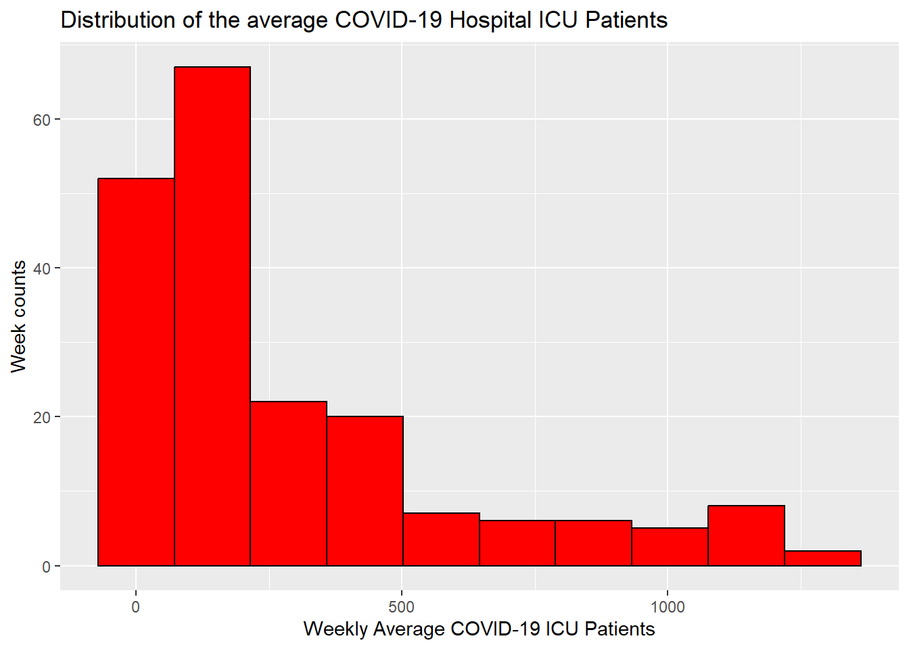
We will get a summary of this data (Distribution of the average COVID-19 Hospital ICU Patients) and calculate the standard deviation
summary(cdc_ga_mandatory_refined$`Weekly Average Hospitalized COVID-19 ICU Patients`)
Min. 1st Qu. Median Mean 3rd Qu. Max.
28.57 69.64 137.29 283.58 376.29 1319.86
#We will calculate the standard deviationsd(cdc_ga_mandatory_refined$`Weekly Average Hospitalized COVID-19 ICU Patients`)
[1] 315.2279
We see how many more patients were hospitalized than were in ICU in Georgia, as the max number for the ICU patients is quite close to mean value of the hospital admissions.
Looking at the same distributions for the Influenza data:
#We are looking at the distribution of the total Influenza cases influenza_adult_admissions_plot<-ggplot(cdc_ga_mandatory_refined, aes(x=`Weekly Total Influenza Admissions`)) +geom_histogram(bins=10,fill="blue", color ="black") +labs(title ="Distribution of the weekly Influenza Hospital Admissions", x ="Weekly Total Influenza Admissions", y ="Week counts")print(influenza_adult_admissions_plot)
Warning: Removed 5 rows containing non-finite outside the scale range
(`stat_bin()`).
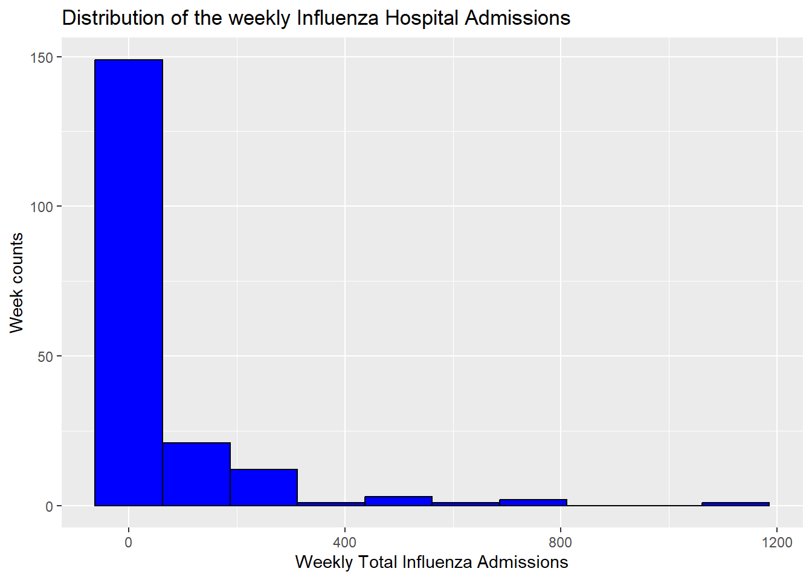
We receive a warning that some values were excluded (likely our NA values).
We will get a summary of this data (Weekly Total Influenza Admissions) and calculate the standard deviation.
summary(cdc_ga_mandatory_refined$`Weekly Total Influenza Admissions`)
Min. 1st Qu. Median Mean 3rd Qu. Max. NA's
0.00 17.00 30.00 73.04 54.75 1123.00 5
#We will calculate the standard deviation and exclude the NA values in the influenza datasd(cdc_ga_mandatory_refined$`Weekly Total Influenza Admissions`, na.rm =TRUE)
[1] 137.6914
The mean value for admissions for the influenza cases is a great deal lower than that from the COVID-19 cases. We see that the mean of the COVID-19 hospital admissions is 17.2 times greater than the mean from the influenza admissions.
#We are looking at the distribution of the average influenza ICU patients influenza_icu_patients_plot<-ggplot(cdc_ga_mandatory_refined, aes(x=`Weekly Average Hospitalized Influenza ICU Patients`)) +geom_histogram(bins=10,fill="red", color ="black") +labs(title ="Distribution of the average Influenza Hospital ICU Patients", x ="Weekly Average Influenza ICU Patients", y ="Week counts")print(influenza_icu_patients_plot)
Warning: Removed 5 rows containing non-finite outside the scale range
(`stat_bin()`).
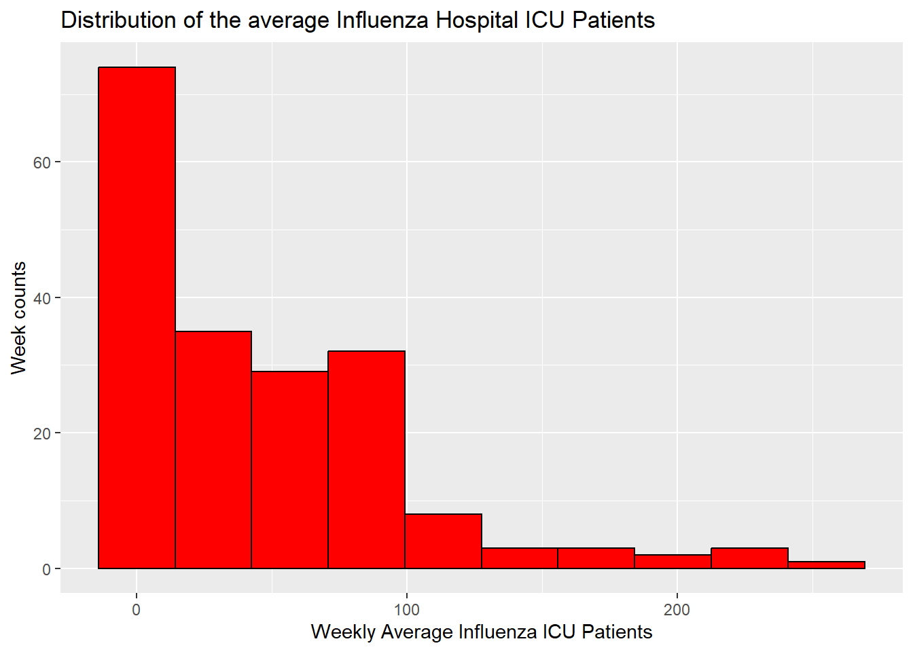
We get the same warning as our previous plot for the influenza cases (regarding the missing NA values).
We will get a summary of this data (Weekly Average Influenza ICU Patients) and calculate the standard deviation.
summary(cdc_ga_mandatory_refined$`Weekly Average Hospitalized Influenza ICU Patients`)
Min. 1st Qu. Median Mean 3rd Qu. Max. NA's
0.000 2.895 31.570 45.580 71.395 255.000 5
#We will calculate the standard deviation and exclude the NA values in the influenza datasd(cdc_ga_mandatory_refined$`Weekly Average Hospitalized Influenza ICU Patients`, na.rm =TRUE)
[1] 51.3058
The mean value for ICU patients for the influenza cases is also much lower than that from the COVID-19 cases (not quite as much compared to admissions). We see that the mean of the COVID-19 hospital admissions is 6.2 times greater than the mean from the influenza ICU patients.
By comparing the plots and summary data we generated for COVID-19 and Influenza cases we can already see the much greater number of hospital admissions and ICU cases from COVID-19 compared to influenza. We also see the wider range for the COVID-19 cases compared to Influenza. The pronounced impact of COVID-19 as a respiratory disease is obvious before we do further analysis.
We can evaluate the strain on the healthcare system by looking at the hospital beds that were occupied (we will just look at total numbers between inpatient and ICU and not as a percentage). This does not distinguish what caused the beds to be occupied.
Looking at the distributions of occupied inptient beds:
#We are looking at the distribution of the occupied inptient beds cdc_inpatient_occupied_beds_plot<-ggplot(cdc_ga_mandatory_refined, aes(x=`Weekly Average Inpatient Beds Occupied`)) +geom_histogram(bins=10,fill="blue", color ="black") +labs(title ="Distribution of the weekly Average Occupied Inpatient Beds", x ="Weekly Inpatient Beds", y ="Week counts")print(cdc_inpatient_occupied_beds_plot)
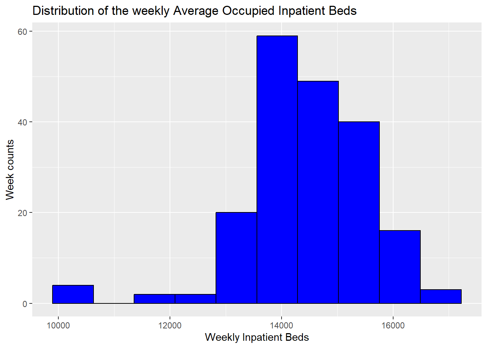
We will get a summary of the inpatient occupied beds data and calculate the standard deviation.
summary(cdc_ga_mandatory_refined$`Weekly Average Inpatient Beds Occupied`)
Min. 1st Qu. Median Mean 3rd Qu. Max.
10065 13769 14365 14415 15170 16660
#We will calculate the standard deviation sd(cdc_ga_mandatory_refined$`Weekly Average Inpatient Beds Occupied`)
[1] 1097.536
#We are looking at the distribution of the occupied ICU beds cdc_icu_occupied_beds_plot<-ggplot(cdc_ga_mandatory_refined, aes(x=`Weekly Average ICU Beds Occupied`)) +geom_histogram(bins=10,fill="red", color ="black") +labs(title ="Distribution of the weekly Average Occupied ICU Beds", x ="Weekly Occupied ICU Beds", y ="Week counts")print(cdc_icu_occupied_beds_plot)
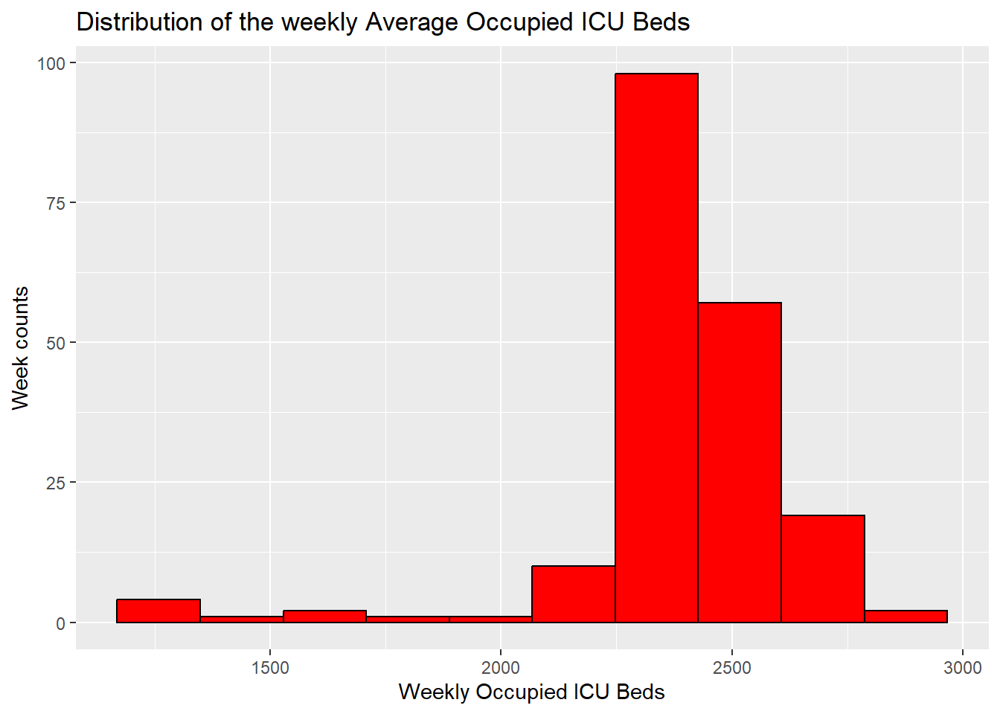
We will get a summary of the occupied ICU beds data and calculate the standard deviation.
summary(cdc_ga_mandatory_refined$`Weekly Average ICU Beds Occupied`)
Min. 1st Qu. Median Mean 3rd Qu. Max.
1210 2315 2395 2377 2484 2828
#We will calculate the standard deviation sd(cdc_ga_mandatory_refined$`Weekly Average ICU Beds Occupied`)
[1] 237.6443
We can look at the occupancy of the inpatient hosptial beds by week for the period evaluated, we will generate a line plot:
#We are looking at the distribution of the occupied inptient beds over time cdc_inpatient_beds_time_plot<-ggplot(cdc_ga_mandatory_refined, aes(x=`Week Ending Date`, y=`Weekly Average Inpatient Beds Occupied`)) +geom_line(color ="black") +labs(title ="Average Occupancy of Inpatient Beds over time", x ="Week Evaluated", y ="Weekly Occupied Inpatient Beds")print(cdc_inpatient_beds_time_plot)
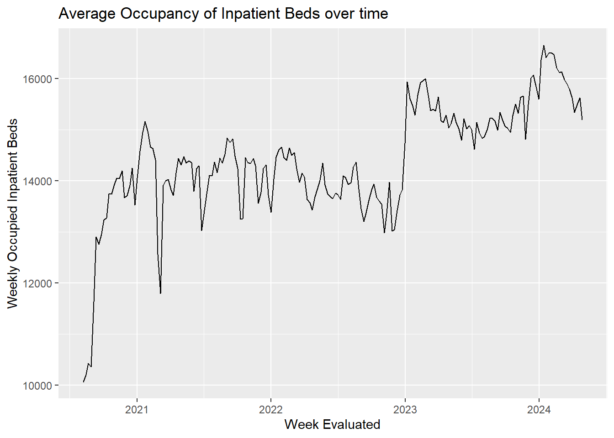
We will provide a summary of the number of hospitals reporting COVID-19 and influenza respectively without plotting a graph.
We will get a summary of the number of hospital reporting Adult COVID-19 Admissions and calculate the standard deviation.
Min. 1st Qu. Median Mean 3rd Qu. Max.
0.0 134.0 137.0 127.2 139.0 139.0
#We will calculate the standard deviation sd(cdc_ga_mandatory_refined$`Number Hospitals Reporting Influenza Admissions`)
[1] 31.62036
We see very similar values for influenza and COVID-19, although we realize that the 0 values in the influenza cases might be an artifact carried by the original creators from the NA values. We will create a new variable looking at the number of hospitals reporting influenza cases without these entries.
#We are using a loop function to first select for rows where there are no NA values, this is based on using one of the columns that we previously saw had an NA value. We then select the rows to only keep the influenza datafiltered_infuenza_cases<- cdc_ga_mandatory_refined |> dplyr::filter(!is.na(`Weekly Total Influenza Admissions`)) |> dplyr::select(`Week Ending Date`, `Number Hospitals Reporting Influenza Admissions`, `Weekly Total Influenza Admissions`,`Weekly Average Hospitalized Influenza ICU Patients`)
We can now run the previous summary of the influenza reported cases by hospitals again and compare results
Min. 1st Qu. Median Mean 3rd Qu. Max.
1.0 135.0 137.0 130.6 139.0 139.0
#We will calculate the standard deviation sd(filtered_infuenza_cases$`Number Hospitals Reporting Influenza Admissions`)
[1] 24.22654
We see that the values did change, with the standard deviation decreasing by around 7, but it perhaps did not decrease by as much as expected because the minimum value is now 1 instead of 0.
It seems plausible that many of these variables will be associated with time due to the COVID-19 pandemic and general fluctuations of the influenza season. Explore the changes over time for all variables.
# rename variables for working conveniencedat <- cdc_ga_mandatory_refined %>%rename(date =`Week Ending Date`,state =`Geographic aggregation`,hosp_report_covid =`Number Hospitals Reporting Adult COVID-19 Admissions`,hosp_report_flu =`Number Hospitals Reporting Influenza Admissions`,num_covid_admin =`Weekly Total Adult COVID-19 Admissions`,num_flu_admin =`Weekly Total Influenza Admissions`,avg_hosp_covid =`Weekly Average Hospitalized COVID-19 ICU Patients`,avg_hosp_flu =`Weekly Average Hospitalized Influenza ICU Patients`,avg_inpat_bed =`Weekly Average Inpatient Beds`,avg_icu_bed =`Weekly Average ICU Beds`,avg_inpat_bed_ocp =`Weekly Average Inpatient Beds Occupied`,avg_icu_bed_ocp =`Weekly Average ICU Beds Occupied` )
# Plot date by reporting COVID hospitalsplot(dat$date, dat$hosp_report_covid) # One outlier of 87 in the first week (2020-08-08) plot(dat$date, dat$hosp_report_covid, ylim =c(130, 140)) # Constant at 139, drops off at the end to about 138, 137, 136, 134 # Plot date by reporting flu hospitalsplot(dat$date, dat$hosp_report_flu) # First 11 observations are between 0-2 plot(dat$date, dat$hosp_report_flu, ylim =c(100, 140)) # Cluster around 120-125 from 08-2021 to 01-2022 plot(dat$date, dat$hosp_report_flu, ylim =c(130, 140)) # Constant at 139 in 2021-2022, then drops to 138, 137, and 134 # Plot date by number of COVID admissionsplot(dat$date, dat$num_covid_admin) # Clear spikes: Jan-Feb 2021, Aug-Sep 2021, Jan 2022 # Smaller spikes: Jul-Aug 2022, Jan 2023 # Plot date by number of flu admissionsplot(dat$date, dat$num_flu_admin) # Peaks in January: 25 (2021), 50 (2022), 80 (2023), 250 (2023), 800 (2024) # Plot date by average hospitalized COVID patientsplot(dat$date, dat$avg_hosp_covid) # Lower bounds: about 400 (2020-2021), about 25 (2022-2024) # Peaks: Jan 2021 (1200), Sep 2021 (1300), Late Jan 2022 (900), # Sep 2022 (200), Jan 2023 (200), Sep 2023 (100), Jan 2024 (150) # Plot date by average hospitalized flu patientsplot(dat$date, dat$avg_hosp_flu) # Slight exponential increase from 0 to 60 (start to Nov 2022) # Noticeable peak in Jan 2023 (100), constant at 90 (2023) # Another peak in Jan 2024, then drops back to 100 # Plot date by average inpatient bedsplot(dat$date, dat$avg_inpat_bed) # Slight increase followed by a tapered decrease (start to end of 2022) # Starts at 16,000, peaks at 19,000, then drops back to 16,000 # Big jump at the start of 2023, lower at 19,500, # Peaks in March (20,500), drops to 20,000 (Aug) # Peaks again in Jan 2024 (20,600), then declines until April # Plot date by average ICU bedsplot(dat$date, dat$avg_icu_bed) # Starts at 2,400, peaks at 3,400 (Feb 2021) # Gradual decline to 3000 (Nov 2022), trough in Dec 2022 (2800) # Rises back to 3000 (Feb 2023), remains constant thereafter # Plot date by average inpatient beds occupiedplot(dat$date, dat$avg_inpat_bed_ocp, ylim =c(14000, 17000)) # Starts at 10000, rises to 13000 (Oct 2020) # Stays variable between 13000-15000 until Dec 2022 # Jumps to 15000 (Jan 2023), peaks at 16000 (end of Jan) # Trough in July (15000), peaks again in Jan 2024 (16,500) # Declines to 15500 at the end of data collection # Plot date by average ICU beds occupiedplot(dat$date, dat$avg_icu_bed_ocp, ylim =c(1000, 3000)) # Starts at about 1500, peaks at 2,600 (Jan 2021) # Remains fairly constant with seasonal variation (peaks in winter, troughs in summer)
Now that we have general idea of how the data looks with time, lets look at the correlations in the data
cor <-cor(dat %>%select(-date, -state) %>%na.omit())# correlations of >= 0.7 include: # num_covid_admin and avg_hosp_covid have cor = 0.93# num_flu_admin and avg_hosp_flu have cor = 0.77,# avg_hosp_flu and avg_inpat_bed have cor = 0.73,# avg_inpat_bed and avg_inpat_bed_ocp have cor = 0.89,# avg_icu_bed and avg_icu_bed_ocp have cor 0.70
Generate synthetic data
Per the encouragement in the instructions for this exercise, I asked ChatGPT to create my code. I first presented the code and text above and asked it to interpret it and provide an “ideal input” for actually simulating the data. It provided the following prompt:
“Generate a synthetic dataset that mirrors the statistical properties and temporal trends of real hospitalization data in Georgia from August 2020 to April 2024. The dataset should include the following variables:
Week Ending Date: Weekly timestamps from 2020-08-08 to 2024-04-27.
Geographic Aggregation: Constant value “GA”.
Number of Hospitals Reporting Adult COVID-19 Admissions: Typically stable around 137-140, except an initial outlier at 87 in August 2020 and slight declines in later years.
Number of Hospitals Reporting Influenza Admissions: Initially low (0-2 for first 11 weeks), stabilizing around 120-139, with some seasonal variations.
Weekly Total Adult COVID-19 Admissions: Clear spikes in Jan-Feb 2021, Aug-Sep 2021, Jan 2022, with smaller spikes in Jul-Aug 2022, Jan 2023, and Jan 2024.
Weekly Total Influenza Admissions: Peaks in January, increasing year over year (25 in 2021, 50 in 2022, 80 in 2023, 800 in 2024).
Weekly Average Hospitalized COVID-19 ICU Patients: High peaks in Jan 2021 (), Sep 2021 (), and Jan 2022 (), then decreasing post-2022.
Weekly Average Hospitalized Influenza ICU Patients: Gradual increase until Nov 2022 (), peak in Jan 2023 (), stable at before another peak in Jan 2024.
Weekly Average Inpatient Beds: General increasing trend with fluctuations, peaking in early 2023 (,500), dropping in late 2023 before another peak in early 2024.
Weekly Average ICU Beds: Peaked at 3400 in Feb 2021, then a gradual decline stabilizing around 3000.
Weekly Average Inpatient Beds Occupied: Increased steadily until 2022, peaked in Jan 2023 (,000), then fluctuated seasonally.
Weekly Average ICU Beds Occupied: Seasonal peaks in winter, troughs in summer, high correlation with ICU bed availability.”
I then asked ChatGPT to proceed with providing the code to produce the synthetic data. It gave me the following:
library(dplyr)library(lubridate)library(MASS)
Attaching package: 'MASS'
The following object is masked from 'package:patchwork':
area
The following object is masked from 'package:dplyr':
select
library(Matrix)
Attaching package: 'Matrix'
The following objects are masked from 'package:tidyr':
expand, pack, unpack
In the following sections, I’ll compare the synthetic data with the real data and evaluate.
Variables by time
# plot real data and synthetic data to compareggplot() +geom_point(data = dat, aes(x = date, y = hosp_report_covid), color ="blue", size =2) +geom_point(data = dat_synth, aes(x = date, y = hosp_report_covid), color ="red", size =2) +theme_minimal()
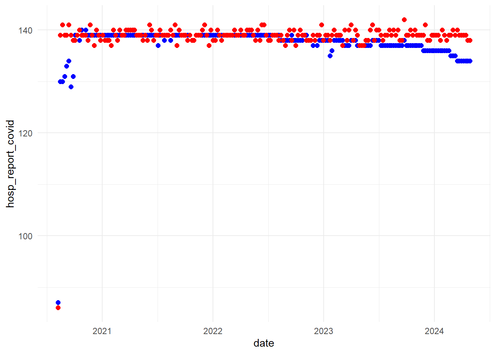
# plot real data and synthetic data to compareggplot() +geom_point(data = dat, aes(x = date, y = hosp_report_flu), color ="blue", size =2) +geom_point(data = dat_synth, aes(x = date, y = hosp_report_flu), color ="red", size =2) +theme_minimal()
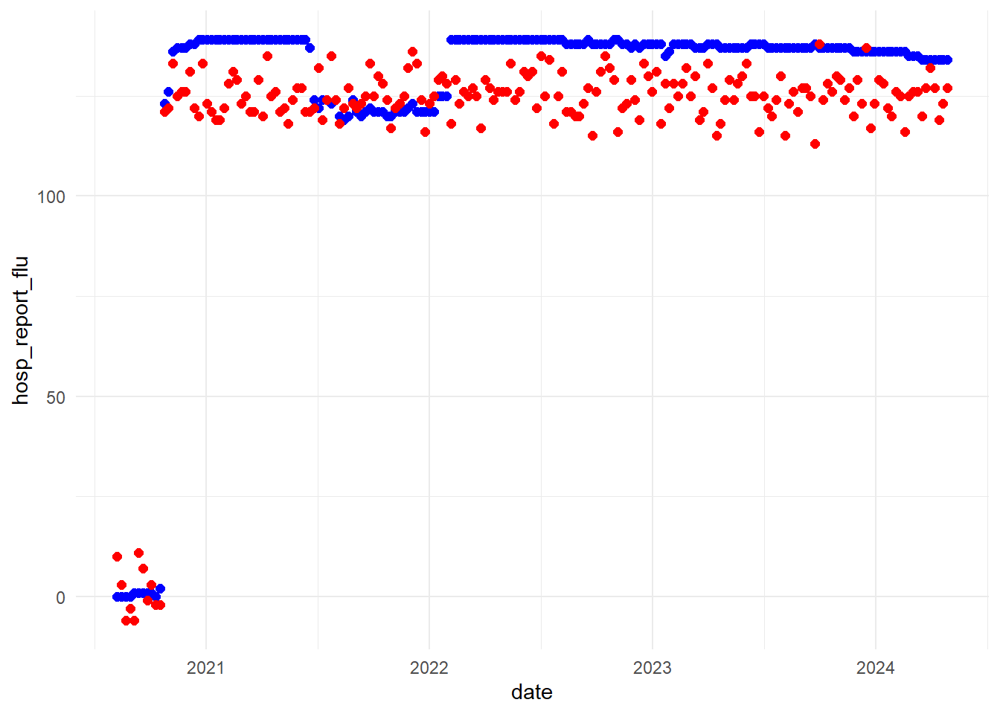
# plot real data and synthetic data to compareggplot() +geom_point(data = dat, aes(x = date, y = num_covid_admin), color ="blue", size =2) +geom_point(data = dat_synth, aes(x = date, y = num_covid_admin), color ="red", size =2) +theme_minimal()
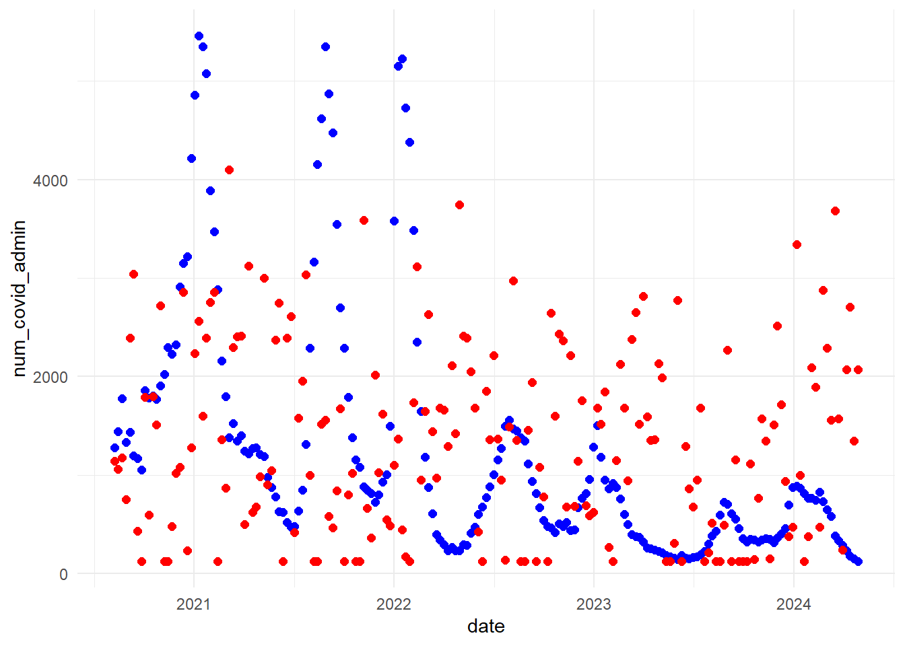
# plot real data and synthetic data to compareggplot() +geom_point(data = dat, aes(x = date, y = num_flu_admin), color ="blue", size =2) +geom_point(data = dat_synth, aes(x = date, y = num_flu_admin), color ="red", size =2) +theme_minimal()
Warning: Removed 5 rows containing missing values or values outside the scale range
(`geom_point()`).
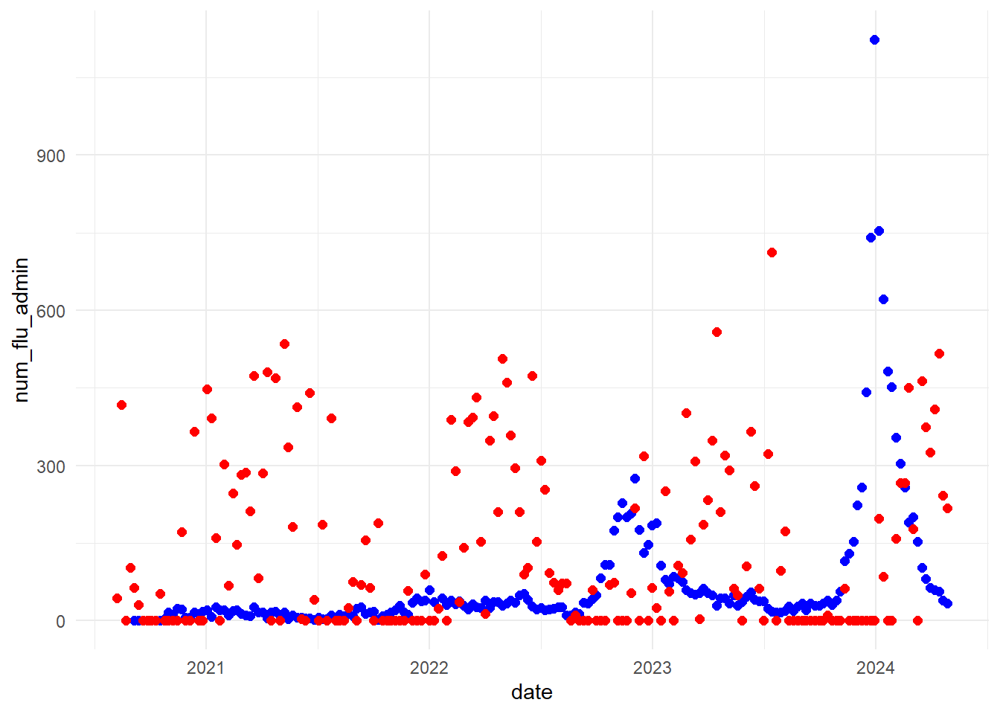
# plot real data and synthetic data to compareggplot() +geom_point(data = dat, aes(x = date, y = avg_hosp_covid), color ="blue", size =2) +geom_point(data = dat_synth, aes(x = date, y = avg_hosp_covid), color ="red", size =2) +theme_minimal()
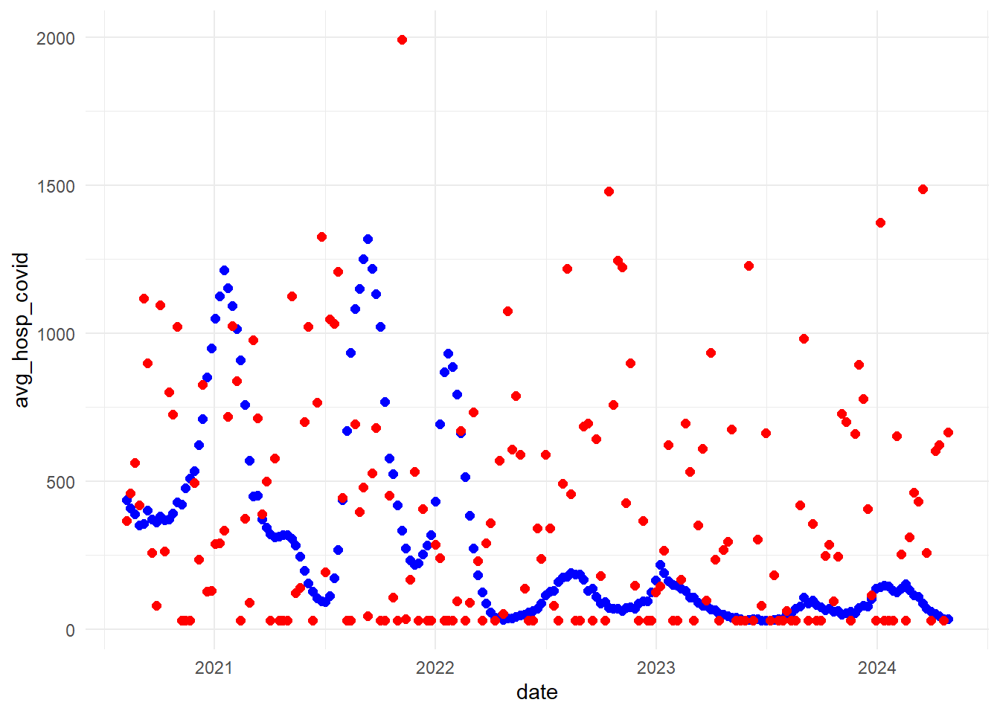
# plot real data and synthetic data to compareggplot() +geom_point(data = dat, aes(x = date, y = avg_hosp_flu), color ="blue", size =2) +geom_point(data = dat_synth, aes(x = date, y = avg_hosp_flu), color ="red", size =2) +theme_minimal()
Warning: Removed 5 rows containing missing values or values outside the scale range
(`geom_point()`).
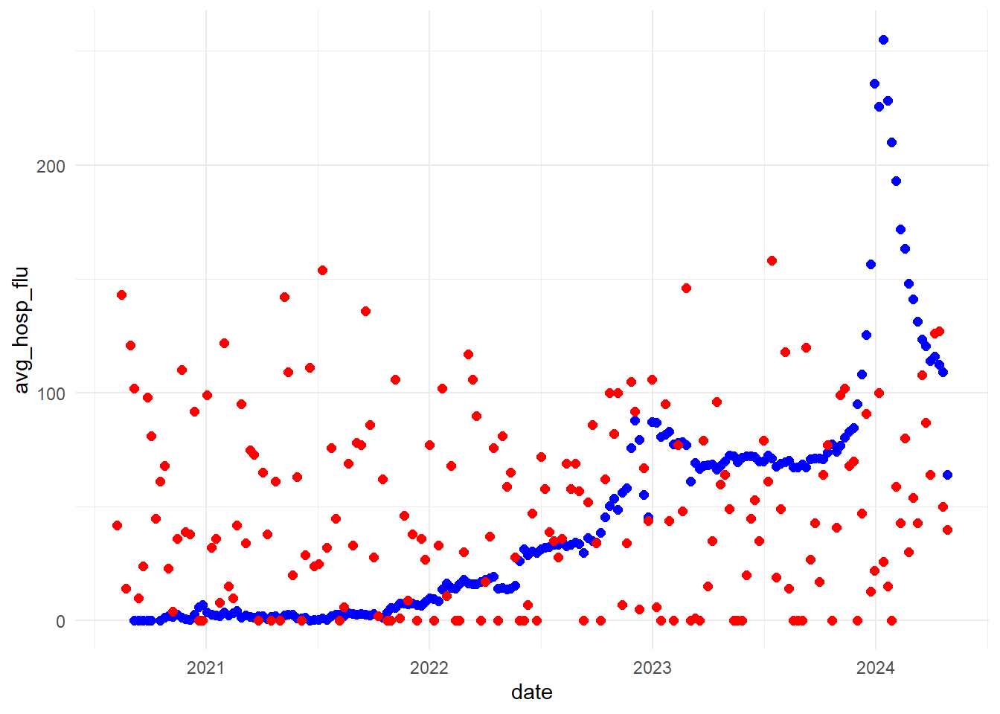
# plot real data and synthetic data to compareggplot() +geom_point(data = dat, aes(x = date, y = avg_inpat_bed), color ="blue", size =2) +geom_point(data = dat_synth, aes(x = date, y = avg_inpat_bed), color ="red", size =2) +theme_minimal()
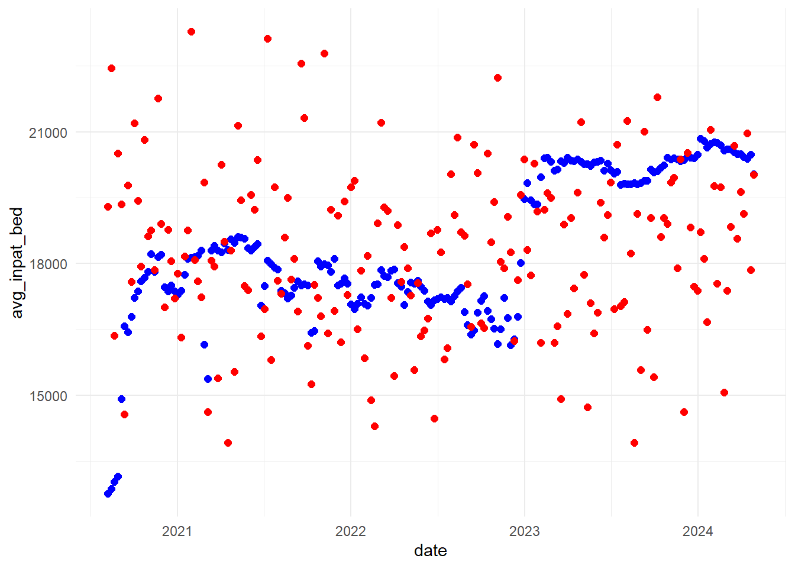
# plot real data and synthetic data to compareggplot() +geom_point(data = dat, aes(x = date, y = avg_icu_bed), color ="blue", size =2) +geom_point(data = dat_synth, aes(x = date, y = avg_icu_bed), color ="red", size =2) +theme_minimal()
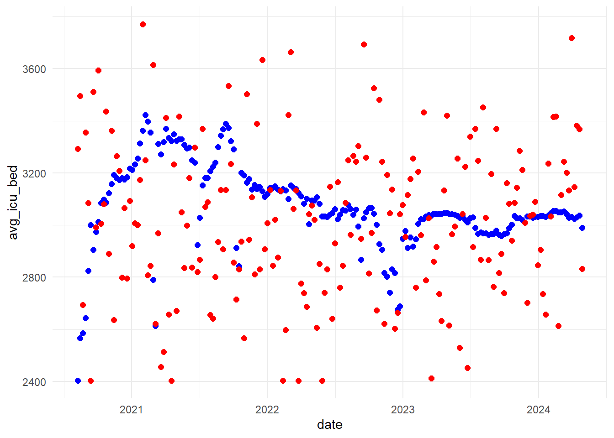
# plot real data and synthetic data to compareggplot() +geom_point(data = dat, aes(x = date, y = avg_inpat_bed_ocp), color ="blue", size =2) +geom_point(data = dat_synth, aes(x = date, y = avg_inpat_bed_ocp), color ="red", size =2) +theme_minimal()
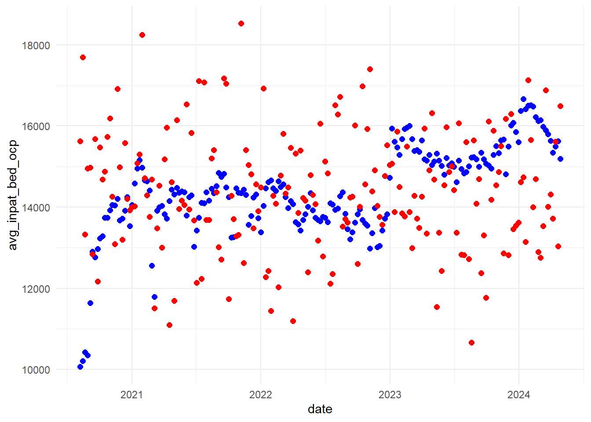
# plot real data and synthetic data to compareggplot() +geom_point(data = dat, aes(x = date, y = avg_icu_bed_ocp), color ="blue", size =2) +geom_point(data = dat_synth, aes(x = date, y = avg_icu_bed_ocp), color ="red", size =2) +theme_minimal()
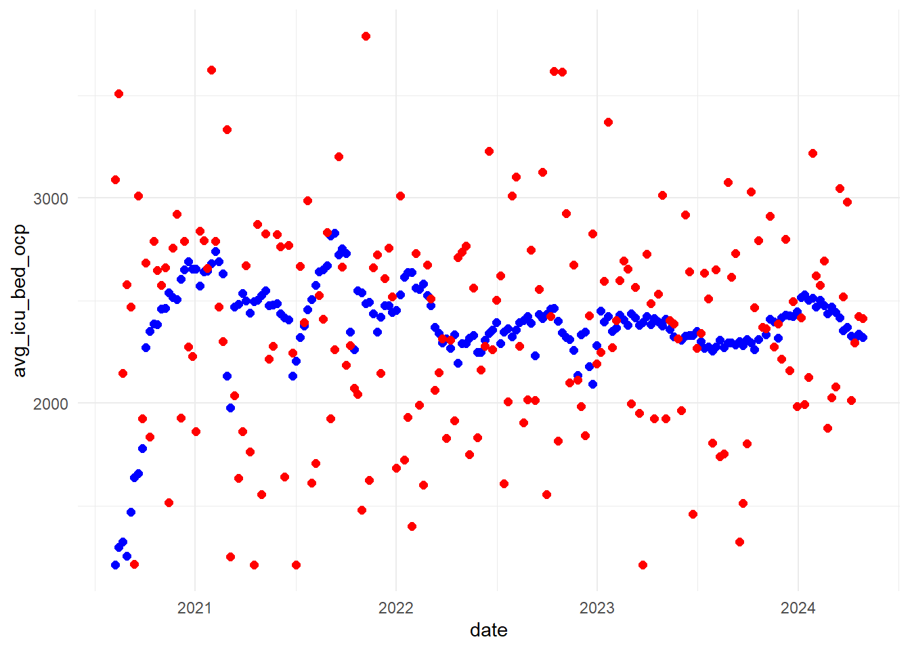
Some of the variables are decent but most lack the more granular trends seen in the real data. Unfortunately, I was expecting this. The data we are working with are very unique in nature because they are from such a unique time. Surely generating data with more precise patterns is possible but it would require more equations.
Variable distributions
These plots correspond to the distribution plots of the real data in part 1.
`stat_bin()` using `bins = 30`. Pick better value with `binwidth`.
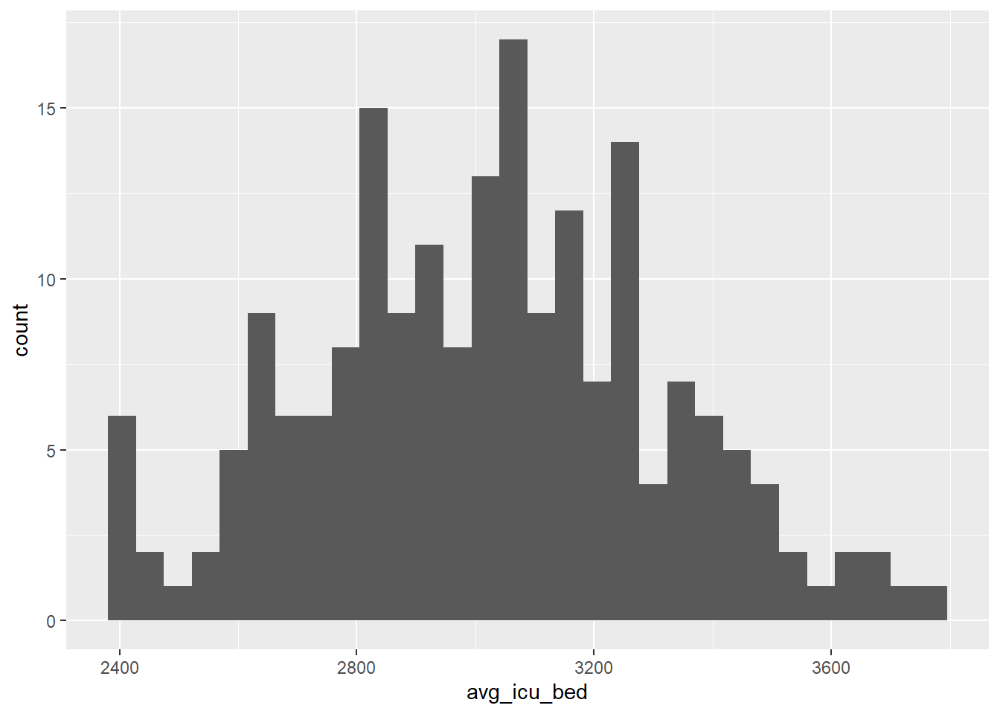
These plots are decent. None are extremely bad in comparison to the real data but none are great.
Summary statistics
These correspond to the summary statistics produced in part 1.
summary(dat_synth$hosp_report_covid)
Min. 1st Qu. Median Mean 3rd Qu. Max.
86.0 138.0 139.0 138.7 140.0 142.0
summary(dat_synth$hosp_report_flu)
Min. 1st Qu. Median Mean 3rd Qu. Max.
-6.0 121.0 125.0 118.2 128.0 138.0
The summary statistics for these two variables in the synthetic data are actually pretty good! This is likely due to the fact that the synthetic data was largely based on such measurements. Though I find this interesting because we know from the plots above that the synthetic data isn’t a great representation of the real data.